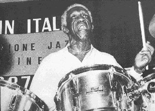

1950s - Art Blakey
Our musician for the 1950s is Art Blakey!
Art Blakey was a drummer and champion of the hard bop style of jazz.
Hard bop was a new style of jazz that evolved from the bebop jazz style of the 1940s. The inventors of hard bop sought to extend bebop by incorporating elements of gospel, blues, and R&B into their music. The result was a musical style that retained the intellectual rigor of bebop, yet mixed in simpler, yet soulful melodies.
Art Blakey was best known for leading his flagship band The Jazz Messengers, which pioneered the new hard bop idiom. The group also acted as a "school" or "proving ground" for many young, up-and-coming jazz musicians, many of whom went on to launch long and successful careers as jazz musicians.